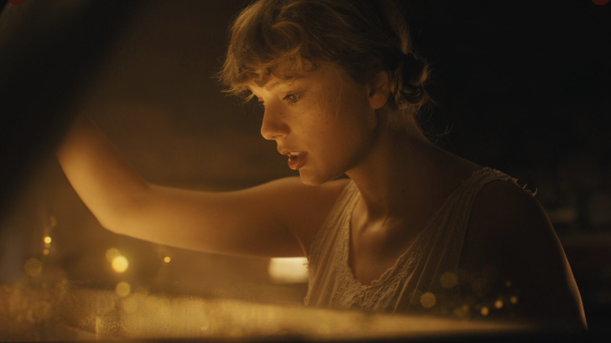
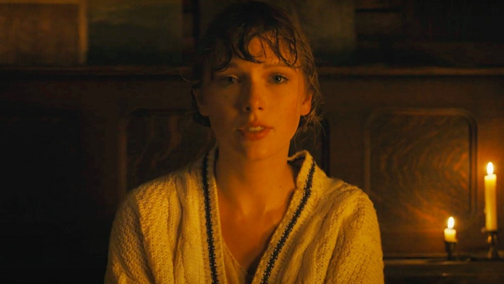

"Cardigan" was the first single released off the album Folklore
Written by Taylor Swift during the COVID-19 pandemic
The album dropped as a suprise on July 24, 2020
Folklore later went on to win Album of the Year at the Grammys
Main Scenes from the Music Video
The Folklore Cabin
Secluded cabin could symbolize the isolation Taylor felt during the pandemic
Nightgown she is wearing could allude to the one Wendy from Peter Pan wears when she goes to Neverland
This is a snapshot of the wall above the piano Taylor is playing
Clock hands are pointing to the numbers 1 and 3, which hint at Taylor's lucky number 13
Picture of her grandpa alludes to her song "Epiphany"
Painting looks like it is depicting her Rhode Island mansion called Holiday House, hinting at "The Last Great American Dynasty"

Looks like pixie dust is coming out of the piano she is about to climb into, which is referencing the lyric "I knew you tried to change the ending, Peter losing Wendy"
Her opeing the piano to golden pixie dust could symbolize the escapism that writing songs provided during this isolating time
Fairytale Forest
Taylor enters a magical forest that is reminiscent of Neverland
Climbing out of her piano into this forest represents how her music has the power to escape to a different world in her head
This forest could also symbolize the romantic, rose-colored glasses part of a new relationship
The forest looks straight out of a fairytale, signifying that her songs on Folklore are mostly based on fictional stories
The piano with water coming out of it is similar to the piano that Harry Styles plays in his music video for "Falling"
Taylor climbs back into the piano bench filled with pixie dust, signifying that she cannot stay in the serene fairytale forest forever
Leaving the forest could also mean that the easy beginning part of a relationship does not last
Treacherous Sea
Taylor emerges out of the forest piano bench into a tumultuous, stormy sea with no land in sight
Could represent Taylor getting cancelled by the media and feeling like she was drowning
Taylor sees a piano in the middle of the rocky ocean and clings on to it
In the BTS video, Taylor said that this scene is inspired by the one from Titanic where Rose is on the piece of wood
The only thing that keeps her from drowning is the piano, symbolizing that music rescues her during hard times
Could also represent that music has always been there for her to help her get through breakups or rocky parts of a relationship
Taylor makes another escape through the piano
Her songs help her keep moving forward out of difficult times by giving her a purpose
Back in the Cabin
Taylor coming back into the cabin represents coming back to reality after escaping through her songs

The cardigan represents finding peace and comfort again
Cardigan could also be a symbol for the relationship she had with Joe Alwyn that formed during the time she was getting cancelled
Could possibly represent coming out stronger on the other side of a difficult time that tests a relationship
She could be staring back at the camera to show that music connects her with her fans, even during an isolating pandemic
Youtube Video Adding to This Analysis:
Tableau Taylor Swift Folklore Songs
This is a Tableau Chart of Folklore Songs and Their Popularity